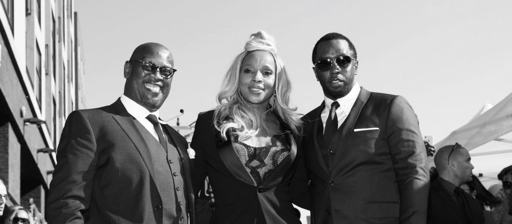

Andre Harrell
The Innovative Music Executive

Record mogul Andre Harrel, left, with multi-platinum recording artists Mary J Blige, and Music Executive Sean Combs
A Timeline of Andre Harrel's Life
- 1960 - Harrell was born in The Bronx, New York City
- 1976 - Harrell and high school friend, Alonzo Brown, formed the hip hop duo, Dr. Jeckyll and Mr. Hyde
- 1978 - He graduated from the Charles Evans Hughes High School.
- 1980 - The group signed with Tayster and Rojac Records in Harlem. They released several hit songs including “Genius Rap,” “Fast Life,” and “AM/PM” as well as the 1984 album, The Champagne of Rap.
- 1981 - The group achieved success with major hit songs like "Genius Rap"
- 1983 - Harrell began working for Russell Simmons at RUSH Management, and within two years, he became the vice president and general manager, helping to launch the careers of Run-DMC, LL Cool J, and Whodini.
- 1986 - Harrell founded his own record label, Uptown Records, where he worked with Heavy D. & The Boyz, Al B. Sure, Notorious B.I.G., Guy, Jodeci, McGruff, Sean Combs, Lost Boyz, and The Gyrlz.
- 1988 - Mary J. Blige recorded an impromptu cover of Anita Baker's "Caught Up in the Rapture" at a recording booth in a local mall. Her mother's boyfriend at the time later played the cassette for Jeff Redd, a recording artist and A&R runner for Uptown Records. Redd sent it to Harrell, who met with Blige.
- 1989 - Mary J. Blige was signed to the label, and she became the company's youngest and first female solo artist.
- 1992 - He worked with Mary J. Blige, releasing her debut album, What’s the 411?, with Uptown. That same year, Harrell accepted a multimedia deal with MCA Music Entertainment Group. He also served as the executive producer of Fox’s hit crime television show, New York Undercover, which aired from 1994 to 1998, and as executive producer of several films, including Strictly Business in 1991, and Honey in 2003.
- 1994 - Harrell had a son with Wendy Credle, a music attorney. They named him Gianni Credle-Harrell.
- 1995 - Harrell became the chief executive officer of Motown Records where he oversaw the careers of Stevie Wonder, Diana Ross, and Queen Latifah.
- 2009 - Harrell received a Cultural Excellence Award from the National Action Network.
- 2013 - Harrell became the vice chairman of Sean Combs’ multimedia company, Revolt TV Network.
- 2014 - He was instrumental in launching the Revolt Music Conference in Miami, Florida, at the Fountainbleau Hotel. The event was attended by such entertainment figures as Guy Oseary, Russell Simmons, and L.A. Reid.
- 2016 - Recipient of BET’s Culture Creators Award
- 2020 - Harrell passed away at his home in West Hollywood, California. He was 59. According to Wendy Credle, Harrell's ex-wife, he had been suffering from heart problems in the time leading up to his death
“Do something that makes you feel happy, so it doesn’t feel like working. My dad worked hard at the produce market in the Hunts Point section of the Bronx, but he didn’t love it, so he was unhappy. That experience made me move towards something I really wanted to do because otherwise, I would feel trapped like him. Sometimes negative experiences can lead you in a positive direction.”